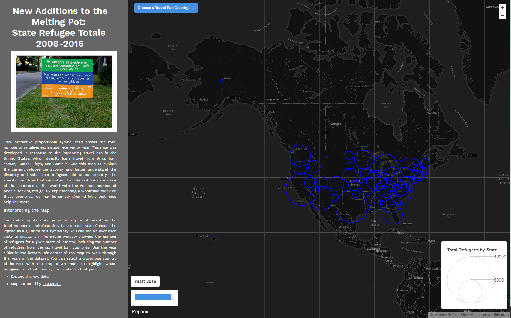

Lee Moser's Digitial Mapping Portfolio
Developed as a Part of the Digital Mapping Program at the University of Kentucky

This interactive web map allows users to explore refugee totals by state from 2008-2016, with a special focus on the six countries specifically mentioned in the 2017 travel ban.
This web map was developed using Leaflet, Mapbox, and custom javascript programming.
This interactive web map allows users to explore refugee totals by state from 2008-2016, with a special focus on the six countries specifically mentioned in the 2017 travel ban.
This web map was developed using Leaflet, Mapbox, and custom javascript programming.

This interactive web map allows users to explore popular paddling destinations throughout Kentucky.
This web map was developed using the Carto web mapping platform.
This interactive web map allows users to explore hydro, solar, and nuclear power plants in the United States.
This map was created using Leaflet and custom Javascript programming.
The user can navigate around the United States and click on specific locations to see hydro, solar, and nuclear power plants within 500 km of the click location.
This map displays the population density of US counties in 2010.
This map was generated utilizing QGIS 2.14.4-Essen digital mapping software.
Population density was calculated by dividing county population by the area of the county in square miles.